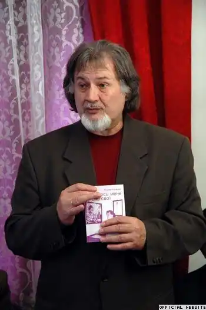
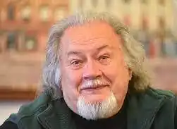

Стельмах Богдан Михайлович народився 2 жовтня 1943 року в с. Туркотин, Генеральна губернія (тимчасова адміністративно-територіальна одиниця, утворена 12 жовтня 1939 року гітлерівським урядом під час Другої світової війни у центрально-східній частині Польської держави. Адміністративний центр був у Кракові) — український поет, драматург, перекладач, автор українських пісень.
Вчився в Туркотинській початковій та Куровицькій семирічних школах. З 1957 року — у Львові, де 1960 року закінчив СШ № 22.
Студіював у Львівському державному університеті імені Івана Франка — спершу на механіко-математичному, потім на філологічному факультетах. У 1964—1967 роках відбував солдатчину у Красноярському краю. Заочно закінчив Українську академію друкарства. Працював робітником на лісозаводі у Раві-Руській, кореспондентом молодіжної газети у Львові, завідувачем відділу музично-драматичного театру Дрогобича. З 1993 року головний спеціаліст відділу мистецтв Львівського обласного управління культури, з 1994-го — заступник голови Львівського міськвиконкому, директор департаменту гуманітарної та соціальної політики, з 1998-го — радник міського голови Львова. Вірші поета перекладено англійською, білоруською, казахською, польською, російською мовами. Заслужений діяч мистецтв України, лауреат літературних премій імені І. Котляревського (1992), імені М. Шашкевича (1994), імені Лесі Українки (1996) та премії "Благовіст" (2004), володар Першої премії "Коронація слова" у номінації "Пісенна лірика" (2015). Автор книжок "Примула, квітка віща" (1969), "Земний вогонь" (1979), "Правдива пісня" (1982), "Батькові слова" (1984), "Пшеничне перевесло" (1988), "Сонечкова донечка" (1988), "Сто пісень" (1989), "Тарас" (1991), "Фрак для доцента" (1991), "Прикрі пригоди в країні погоди" (1991), "Писанка" (1993), "Світлиця пісень і спогадів" (2001), "Вірші про Україну" (2002, 2004), "Ця осінь називається Марія" (2003), "Божевільня метеликів" (2008) та інших. У доробку поета кілька оперних лібрето, серед яких "Мойсей" за поемою Франка. Серед перекладів та переспівів є збірка давньоєгипетської лірики "Початок радісних пісень" (2000), "Сто одинадцять хайку Мацуо Басьо" (2004), еротичні п'ятивірші (танка) "Ночі Коматі" (2007) інтерпретація поеми "Слово о полку Ігоревім", комедія Тірсо де Моліни "Благочестива Марта", п'єси Едмона Ростана "Шантеклєр" та "Романтики", лібрето опери Дж. Верді "Фальстаф" й інші драматичні твори. Упродовж 2007—2008 років вийшло семитомне видання творів Б. Стельмаха із назвою кожної книги зокрема ("Мольфар", "Тарас", "Атентат", "Чудасія", "Гребля", "Романтики", "Світлиця"). Один з авторів всеукраїнських дитячих видань "Ангелятко" та "Ангеляткова наука". Член Національної Спілки письменників України з 1977. Член Народного Руху з дня його заснування.